What you are looking at
The analysis layer is a library of more than 100 named directives — small, single-purpose rules such as “this instrument is oversold” — grouped into more than 40 protocols, each of which asks one specific question of the market. The screenshots below show what that looks like in practice.
Written for: traders who are curious what a purpose-built analysis platform looks like. No prior knowledge of this app is assumed — the handful of words its screens use are defined just below. If you already build systems, skip to the gallery: the interesting part is how the pieces compose.
The words on the screens
- Directive
- A single named rule — “this instrument looks oversold”, “momentum is fading”. Each one looks at the market and reports what it found. Directives are the small pieces.
- Protocol
- A chosen set of directives that answers a specific question, such as “is there a long opportunity in gold this afternoon?”. Protocols are the opinion.
- Scoring
- Running a protocol over a symbol and turning the directives that fired into one comparable number, so that many symbols and many protocols can be ranked against each other instead of being read one at a time.
- Signal
- The ranked result — what the platform thinks is worth your attention right now, and in which direction.
- Watchlist
- The list of symbols you asked it to keep an eye on.
- MetaStack
- A complete assembled unit: which symbols to watch, which protocol judges them, how the score is used, and which trading strategy acts on it. It is the thing that can be rated, versioned and compared.
The screens
17 captures from the alpha build, in no particular order. Every image is a real screen; none is a mockup.
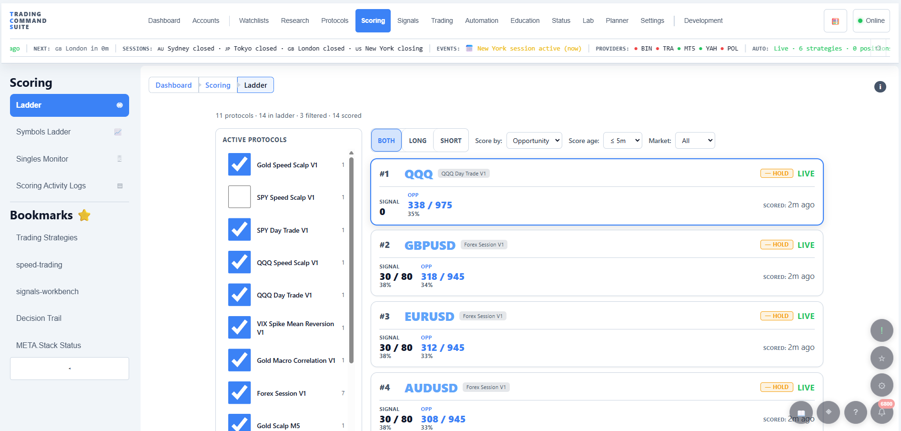
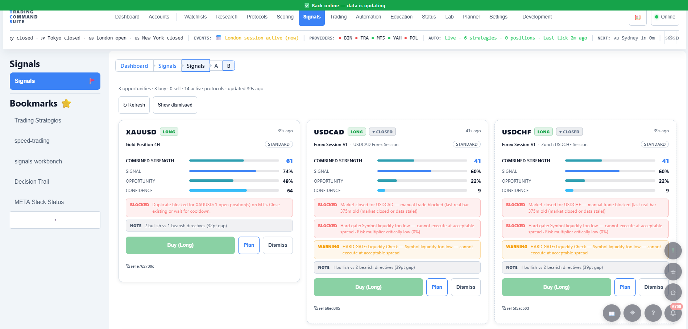
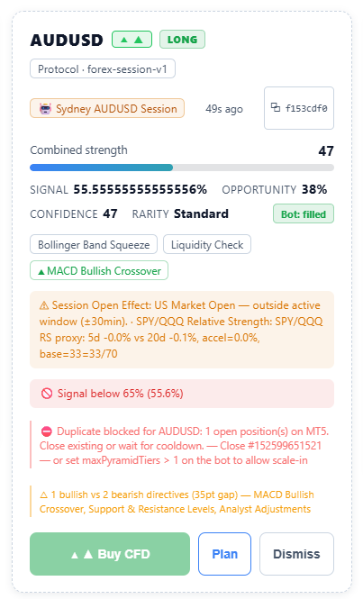
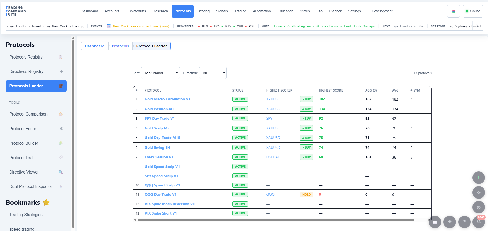
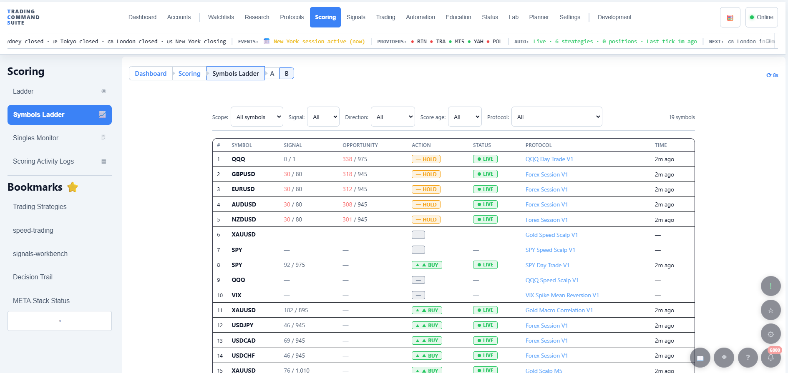
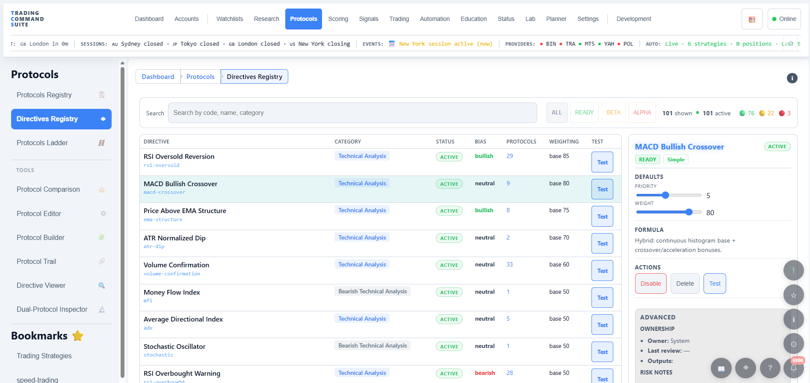
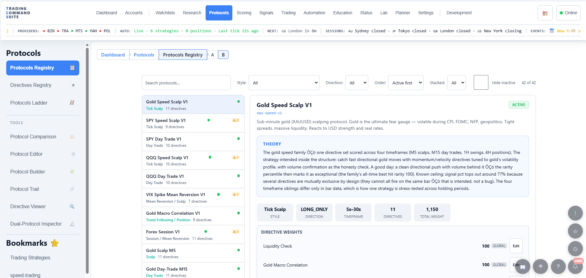
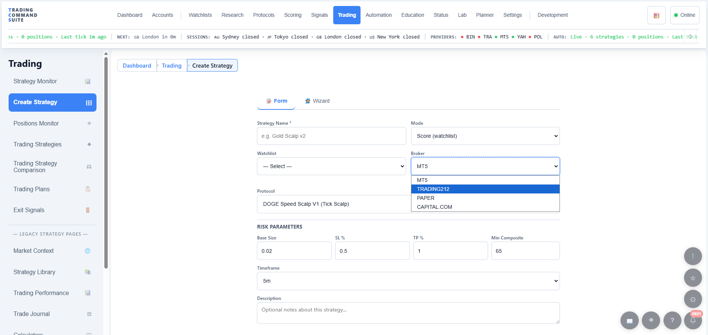
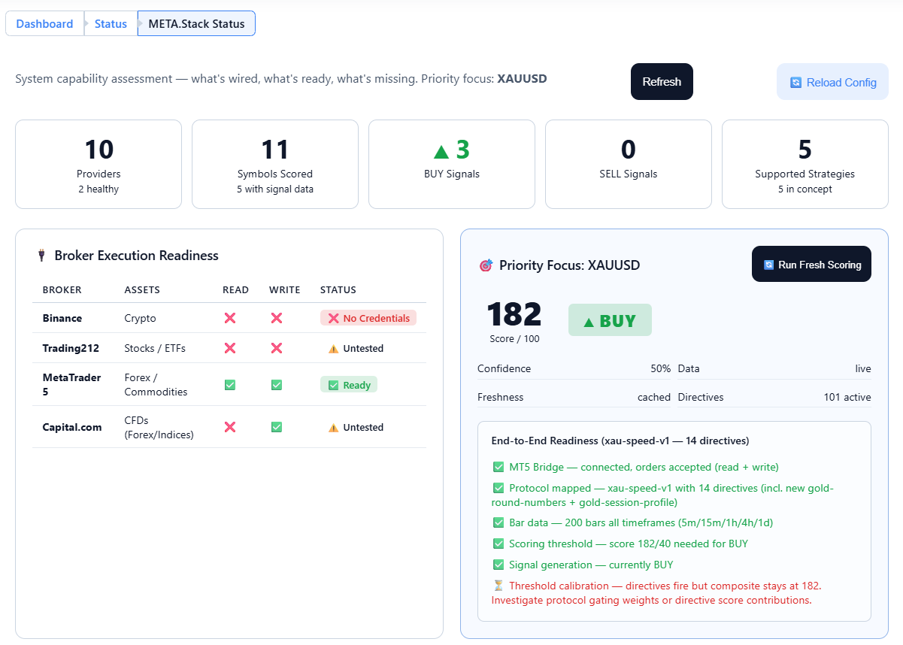
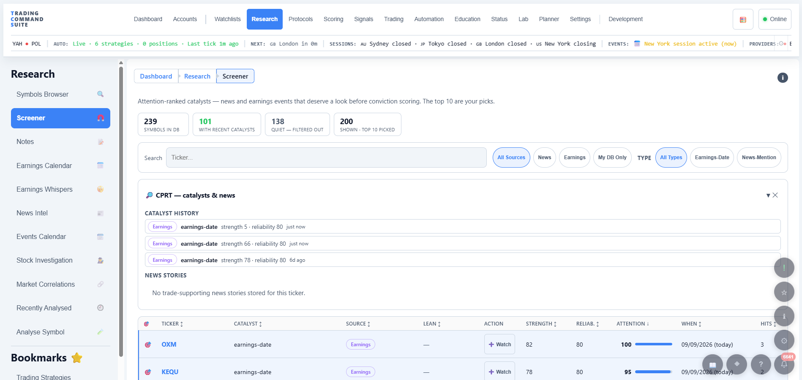
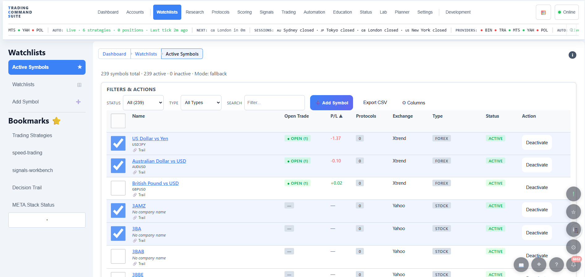
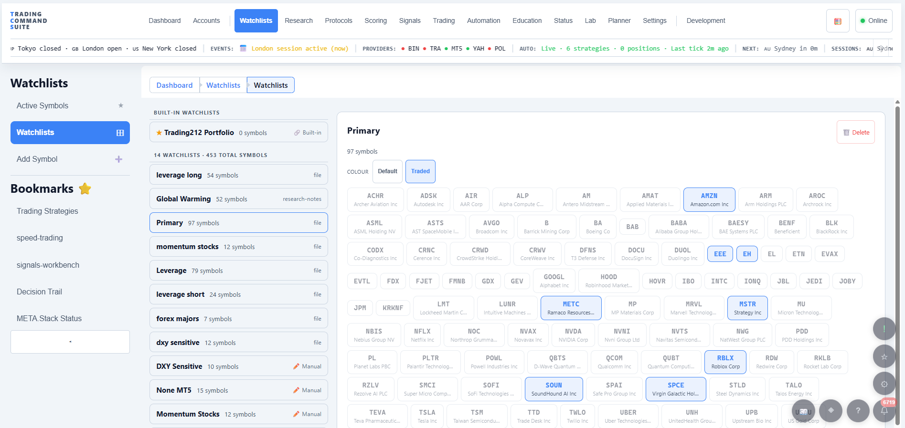
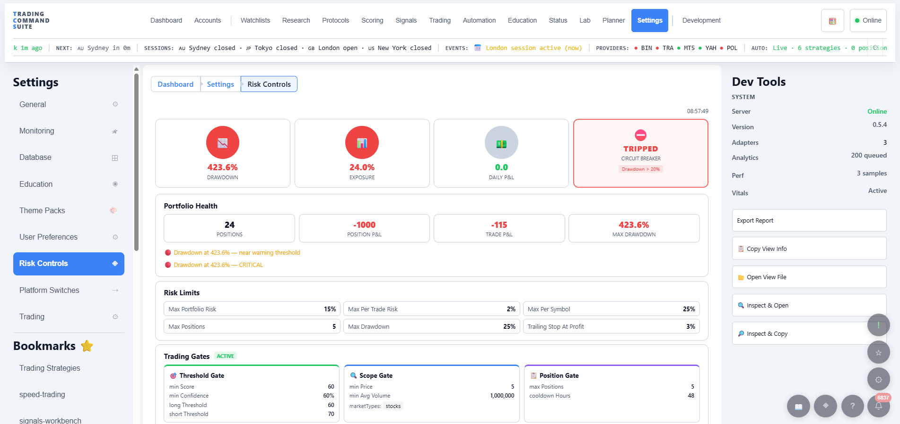
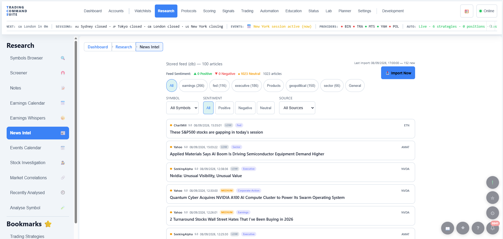
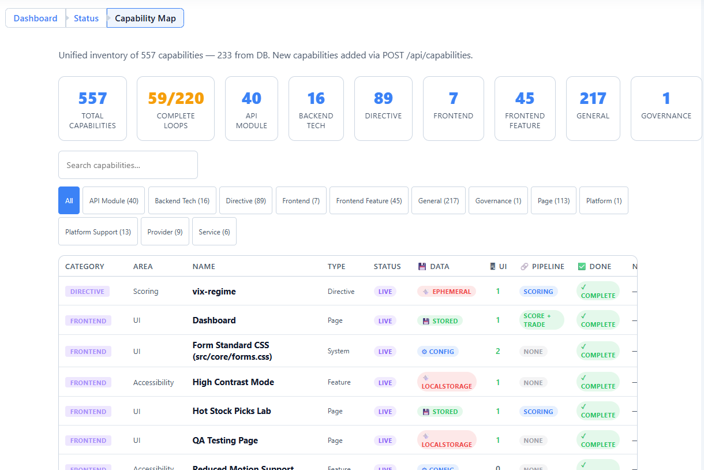
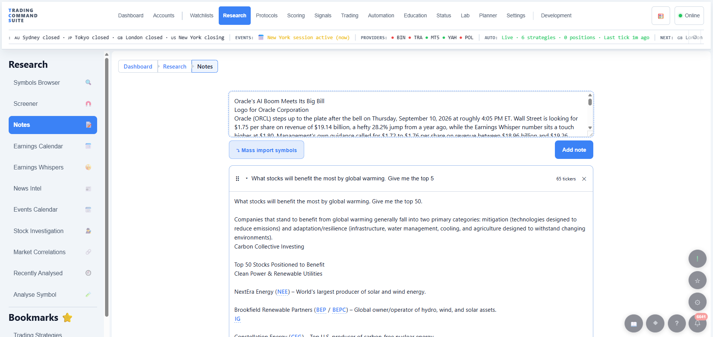
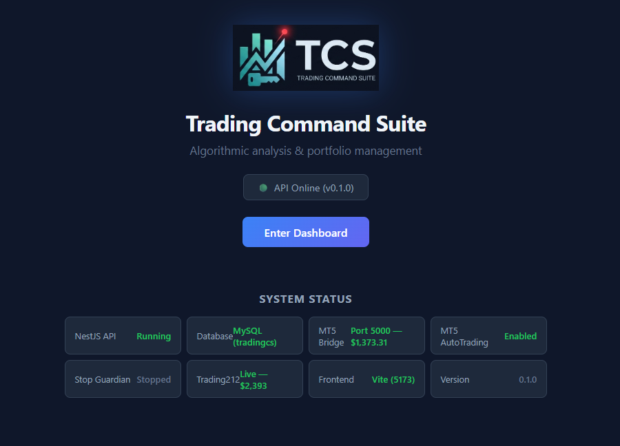
This is early alpha — here is what that means
The screenshots are honest, and that is partly the point: this is a large surface, some of it unfinished. What has changed since these captures, and what changes next:
- Looks. Layout, spacing and typography have been substantially reworked, and continue to be.
- Focus. Screens that were research instruments are becoming daily tools — fewer numbers, more decisions.
- Completeness. Some pages visible here are deliberately incomplete, and the app is meant to say so rather than hide it.
- Stability. It runs against demo accounts. It is not offered as something to trade real money with yet.
If a busy-looking screen makes you think “surely that could be simpler” — that is a conversation worth having, and a large part of why this is being shown while it is still rough.
Becoming a tester
Anyone can apply. Testers get an early build, an honest view of what is broken, and a say in what gets fixed first.
Ideally you trade, or you have built trading tools, and you are comfortable saying when something is wrong in specific terms rather than generally.
There is no application form yet. The fastest route is the Discord invite above — say hello and mention you would like to test. That is the whole application.
Status of this page
| Page purpose | Show real screens from the early alpha, and invite testers and community. |
|---|---|
| Audience | Traders and system builders. Terms are defined above; nothing else is assumed. |
| Content status | draft — complete and link-checked; awaiting publication. |
| Validation | Screenshots are captures of a real build against demo accounts. No performance claim of any kind is made or implied by this page. |
| Last reviewed | 2026-09-29 |
| Numbers | Counts are stated as deliberate floors (“more than 100”) rather than exact figures, so they stay true as the platform grows. |
Please read
Trading Command Suite is software for analysis and automation. It does not provide financial, investment, tax or legal advice, and nothing on this page is advice or a recommendation to trade. It is in alpha and is not ready to be relied on with real money. Anything you trade is your decision and your risk. Figures visible in the screenshots come from a demo account and an early build, and are shown to illustrate the interface only.